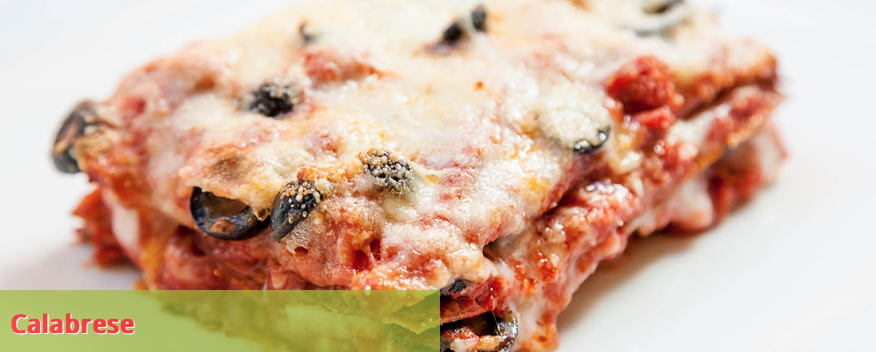
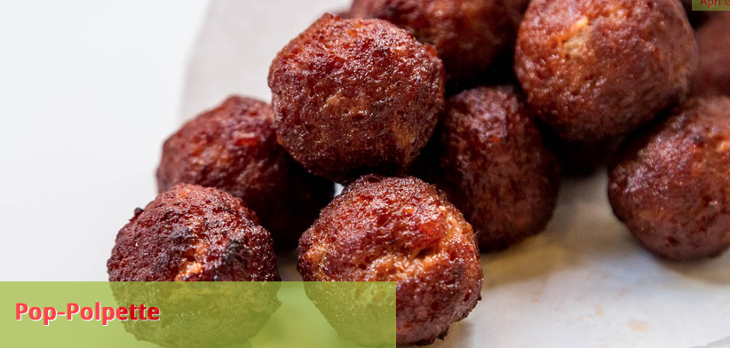
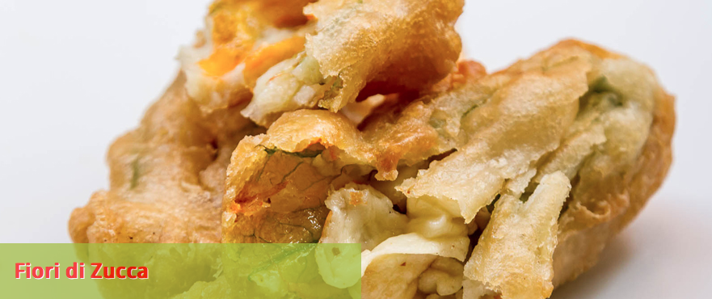
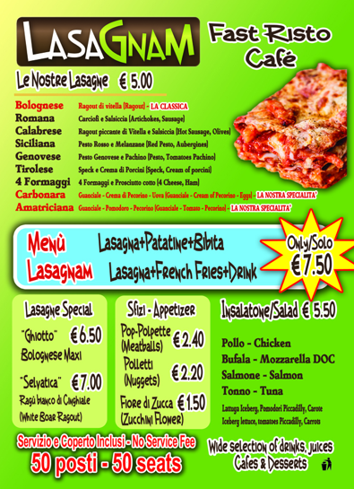
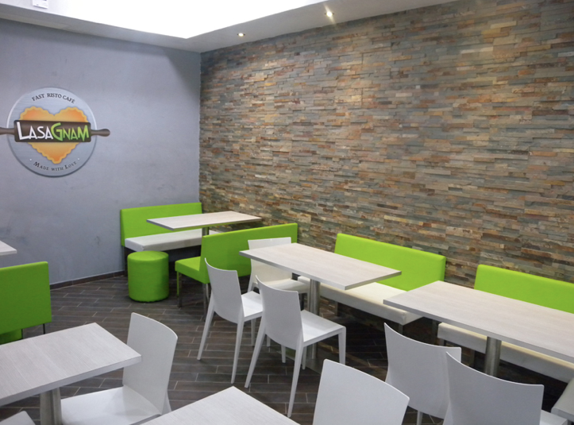

This is an information that I pass on to you, but that I haven't tried first hand. It's something I learned watching TV a few days ago, and since I think it is a quite smart business initiative, I thought you may find it useful as I do.
There's a
Lasagna fast food in Rome, near the Colosseum, called Lasagnam, which sells fast, genuine dishes freshly made every day.
Fatto a mano con amore ogni giorno (hand made with love every day) is their motto and according to the reviews on
Tripadvisor it is highly rated (4 stars out of 5).
They make 10 different kinds of
lasagne (one even with boar meat)

But also
polpette

And specialties like
fiori di zucca (whose
recipe you can find on my design blog)

As you can see, they have a quite interesting selection on their menu:

Besides, the venue itself is modern and fresh (which is also important, at least for a design freak like myself).

So, if you ever happen to be in Rome and want to try it out, let me know. I'm curious to hear your opinion about it.
PS: They also have a
Facebook page in case you want to start following them.